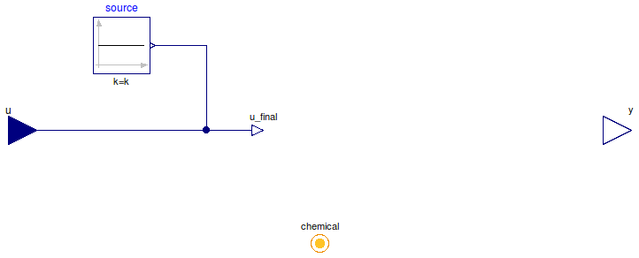

Table of Contents
- User's Guide
- Blocks
- Conditions
- Assemblies
- Regions
- Subregions
- Connectors
- Characteristics
- Units
- Quantities
- BaseClasses
Download
- Latest: FCSys-2.0.zip (**Please check back soon or contact kdavies4 at gmail.com.)

| Name | Description |
|---|---|
| Specify chemical potential (measure current) | |
| Specify current (measure chemical potential) | |
| Custom | |
| Base classes (generally not for direct use) |
 FCSys.Conditions.ByConnector.ChemicalSpecies.Potential
FCSys.Conditions.ByConnector.ChemicalSpecies.Potential
| Type | Name | Default | Description |
|---|---|---|---|
| ConditionType | conditionType | BaseClasses.ConditionType.Po… | Type of condition |
| Specification of material condition | |||
| Boolean | internal | true | Use internal specification |
| Constant | source | redeclare Modelica.Blocks.So… | Source of internal specification |
| Properties upon outflow | |||
| Velocity | phi[Axis] | {0,0,0} | Velocity (φ) [l/T] |
| PotentialAbsolute | sT | Specific entropy-temperature product [l2.m/(N.T2)] | |
| Assumptions | |||
| Axes with translational momentum included | |||
| Boolean | inclTransX | true | X |
| Boolean | inclTransY | true | Y |
| Boolean | inclTransZ | true | Z |
| Type | Name | Description |
|---|---|---|
| ChemicalSpecies | chemical | Connector for a species of a chemical reaction |
model Potential "Specify chemical potential (measure current)" extends BaseClasses.PartialCondition( final conditionType=BaseClasses.ConditionType.Potential, u(final unit="l2.m/(N.T2)"), final y(final unit="N/T") = chemical.Ndot); equation chemical.mu = u_final; end Potential;
FCSys.Conditions.ByConnector.ChemicalSpecies.Current
| Type | Name | Default | Description |
|---|---|---|---|
| ConditionType | conditionType | BaseClasses.ConditionType.Cu… | Type of condition |
| Specification of material condition | |||
| Boolean | internal | true | Use internal specification |
| Constant | source | redeclare Modelica.Blocks.So… | Source of internal specification |
| Properties upon outflow | |||
| Velocity | phi[Axis] | {0,0,0} | Velocity (φ) [l/T] |
| PotentialAbsolute | sT | Specific entropy-temperature product [l2.m/(N.T2)] | |
| Assumptions | |||
| Axes with translational momentum included | |||
| Boolean | inclTransX | true | X |
| Boolean | inclTransY | true | Y |
| Boolean | inclTransZ | true | Z |
| Type | Name | Description |
|---|---|---|
| ChemicalSpecies | chemical | Connector for a species of a chemical reaction |
model Current "Specify current (measure chemical potential)" extends BaseClasses.PartialCondition( final conditionType=BaseClasses.ConditionType.Current, u(final unit="N/T"), final y(final unit="l2.m/(N.T2)") = chemical.mu); equation chemical.Ndot = u_final; end Current;
FCSys.Conditions.ByConnector.ChemicalSpecies.Custom
The expression to which the condition is applied (x)
must involve chemical.mu and/or chemical.Ndot.
Extends from BaseClasses.PartialCondition (Partial model of a material condition).
| Type | Name | Default | Description |
|---|---|---|---|
| ConditionType | conditionType | BaseClasses.ConditionType.Cu… | Type of condition |
| Specification of material condition | |||
| Boolean | internal | true | Use internal specification |
| Constant | source | redeclare Modelica.Blocks.So… | Source of internal specification |
| Properties upon outflow | |||
| Velocity | phi[Axis] | {0,0,0} | Velocity (φ) [l/T] |
| PotentialAbsolute | sT | Specific entropy-temperature product [l2.m/(N.T2)] | |
| Measurement | |||
| RealOutput | y | chemical.Ndot | Measurement expression |
| Specification | |||
| Real | x | chemical.mu | Expression to which the condition is applied |
| Assumptions | |||
| Axes with translational momentum included | |||
| Boolean | inclTransX | true | X |
| Boolean | inclTransY | true | Y |
| Boolean | inclTransZ | true | Z |
| Type | Name | Description |
|---|---|---|
| input RealInput | u | Value of specified condition |
| ChemicalSpecies | chemical | Connector for a species of a chemical reaction |
| Measurement | ||
| output RealOutput | y | Measurement expression |
model Custom "Custom" extends BaseClasses.PartialCondition(final conditionType=BaseClasses.ConditionType.Custom, y=chemical.Ndot); Real x=chemical.mu "Expression to which the condition is applied"; equation x = u_final; end Custom;